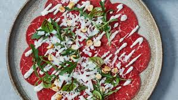

Carpaccio
ingrediënten
- ¾ el olijfolie truffelaroma
- 62½ g rundercarpaccio
- 7½ g rucola
- 12½ g Parmigiano Reggiano
Bereidwijze
- Meng de azijn, olie, peper en eventueel zout tot een dressing. Verdeel de plakjes carpaccio naast elkaar over borden en besprenkel met de dressing.
- Snijd de rucola grof en verdeel over de carpaccio. Schaaf de Parmezaanse kaas er met een dunschiller over.
